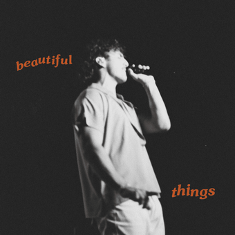

Willify
Willify

[Verse 1]
For a while there, it was rough
But lately, I've been doin' better
Than the last four cold Decembers I recall
And I see my family every month
I found a girl my parents love
She'll come and stay the night, and I think I might have it all
And I thank God every day
For the girl He sent my way
But I know the things He gives me, He can take away
And I hold you every night
And that's a feeling I wanna get used to
But there's no man as terrified as the man who stands to lose you
[Pre-Chorus]
Oh, I hope I don't lose you
Mm, please stay
I want you, I need you, oh God
Don't take
These beautiful things that I've got
[Chorus]
Please stay
I want you, I need you, oh, God
Don't take
These beautiful things that I've got
[Post-Chorus]
Oh, ooh
Please don't take
[Verse 2]
I found my mind, I'm feelin' sane
It's been a while, but I'm finding my faith
If everything's good and it's great, why do I sit and wait 'til it's gone?
Oh, I'll tell ya, I know I've got enough
I've got peace and I've got love
But I'm up at night thinkin' I just might lose it all
[Chorus]
Please stay
I want you, I need you, oh God
Don't take
These beautiful things that I've got
[Post-Chorus]
Oh, ooh
[Outro]
Please stay
I want you, I need you, oh God
I need
These beautiful things that I've got